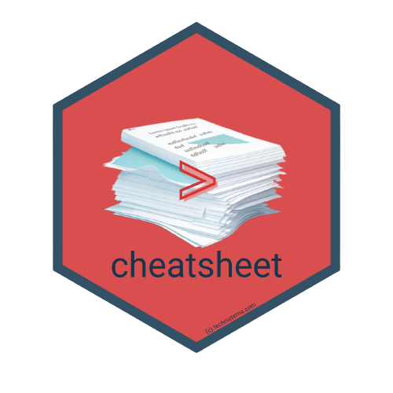

LinkedIn | Github | Blog | Subscribe

Package homepage: https://bradlindblad.github.io/cheatsheet/ Package github repo: https://github.com/bradlindblad/cheatsheet
{cheatsheet} is a simple R package that downloads helpful R cheatsheets from the repository maintained by RStudio. You could easily just clone the repo these are hosted at and filter them how you wish; this package is just a shortcut and more useful for people who aren’t familiar with git.
Installation
You can install the released version of cheatsheet from CRAN with:
Usage
The main function here is cheatsheet::get_all_cheatsheets
library ( cheatsheet )
library ( fs )
# Get all cheatsheets and place in a folder on your desktop
cheatsheet :: get_all_cheatsheets ( local_path = "cheats" , tidyverse_only = FALSE )
fs :: dir_ls ( "cheats" )
# 0-template.pdf
# Machine Learning Modelling in R.pdf
# SamplingStrata.pdf
# base-r.pdf
# bayesplot.pdf
# bcea.pdf
# caret.pdf
# cartography.pdf
# collapse.pdf
# data-import.pdf
# data-transformation.pdf
# data-visualization-2.1.pdf
# datatable.pdf
# declaredesign.pdf
# distr6.pdf
# estimatr.pdf
# eurostat.pdf
# factors.pdf
# gganimate.pdf
# golem.pdf
# gwasrapidd.pdf
# h2o.pdf
# how-big-is-your-graph.pdf
# imputeTS.pdf
# jfa.pdf
# keras.pdf
# labelled.pdf
# leaflet.pdf
# lubridate.pdf
# mlr.pdf
# mosaic.pdf
# nardl.pdf
# nimble.pdf
# oSCR.pdf
# overviewR.pdf
# package-development.pdf
# packagefinder.pdf
# parallel_computation.pdf
# plumber.pdf
# purrr.pdf
# quanteda.pdf
# randomizr.pdf
# regex.pdf
# reticulate.pdf
# rmarkdown-2.0.pdf
# rphylopic.pdf
# rstudio-ide.pdf
# sf.pdf
# shiny.pdf
# shiny_Spanish_final.pdf
# sjmisc.pdf
# sparklyr.pdf
# stata2r.pdf
# strings.pdf
# survminer.pdf
# syntax.pdf
# teachR.pdf
# tidyeval.pdf
# time-series.pdf
# tsbox.pdf
# vegan.pdf
# vtree.pdf
# xplain.pdf
# Just grab core tidyverse cheatsheets
cheatsheet :: get_all_cheatsheets ( local_path = "cheats" , tidyverse_only = TRUE )
# data-import.pdf data-transformation.pdf
# data-visualization-2.1.pdf factors.pdf
# lubridate.pdf purrr.pdf
# strings.pdf tidyeval.pdf Foreign language support
{cheatsheet} also lets you download cheatsheets that have been translated to over a dozen languages. Check which languages are available with this command:
── Languages available for get_translation() ───────────────────────────────────
── Pass the language you choose above to get_translation(), like:
get_translation('~/Desktop/french', 'french')
Then, pass the language you want to this function:
cheatsheet :: get_translation ( local_path = "cheats" , language = "german" )
# base-r_de.pdf
# data-transformation-cheatsheet_de.pdf
# data-wrangling-german.pdf
# devtools-german.pdf
# ggplot2-german.pdf
# rmarkdown-cheatsheet-2.0-german.pdf
# shiny-german.pdf
# sparklyr-cheatsheet_de.pdf
If anyone has another known and established stash of cheatsheets that would be helpful for this package, please submit an issue or pull request.
Want more content like this? Subscribe here